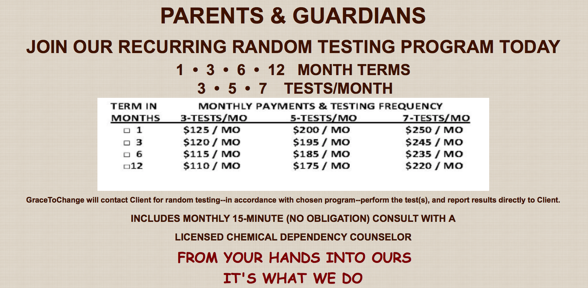
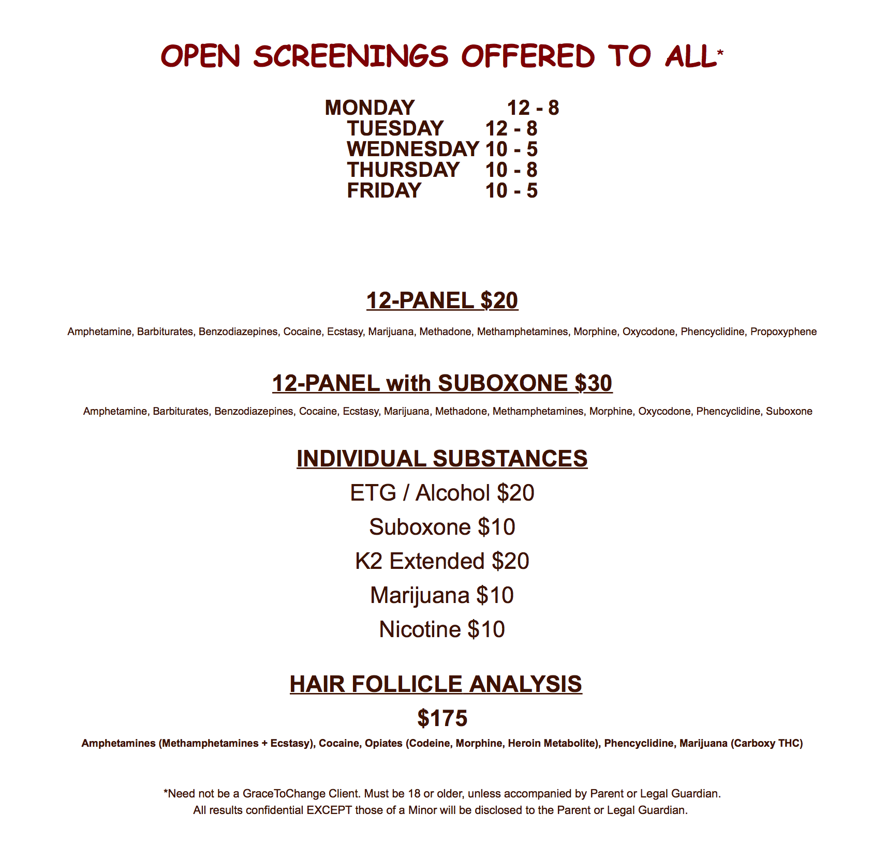

Change A Life,
Change A Community

Grace For All
Seeking Grace?
At GraceToChange, we believe once you have acknowledged the need and genuine desire to make changes in your life, your journey begins.
WE ARE HERE TO HELP!
Tailored Treatment
At GraceToChange, we utilize a multi-modal approach to counseling, including psycho-educational groups, process groups, and an eclectic blend of individual counseling techniques designed to meet each client's specific need. Let us help tailor your recovery program just for you!
Intensive Outpatient Treatment
Our Intensive Outpatient Program (IOP) consists of 18 group counseling sessions, three times per week for six weeks, plus a minimum of four one-hour individual counseling sessions.
Supportive Outpatient Treatment
Our Supportive Outpatient Program (SOP) consists of 12 group counseling sessions, two times per week for six weeks, plus a minimum of three one-hour individual counseling sessions.
Group Session Schedules
MONDAY - TUESDAY - THURSDAY 6:00 PM to 8:30 PM
Individual Counseling
GraceToChange is open Monday through Friday for individual support and counseling. For More Information or to Begin Your Journey Please Call Us. Grace Awaits. 972.542.2900
Keeping Grace, After Care
GraceToChange offers weekly aftercare support for all clients at no additional charge for a period of one year following successful completion of their initial treatment plan. Not only do our clients have the opportunity to continue learning and growing in their sobriety, they are also able to create and maintain critical sober relationships with other group members. Additionally, clients who are farther along in their recovery are able to mentor and encourage those who are newer to the program.
Pricing and Plans on Drug Testing
 Phone
(972) 542-2900Address
1216 North Central Expressway Suite 104Mckinney, TX 75070
United States of America